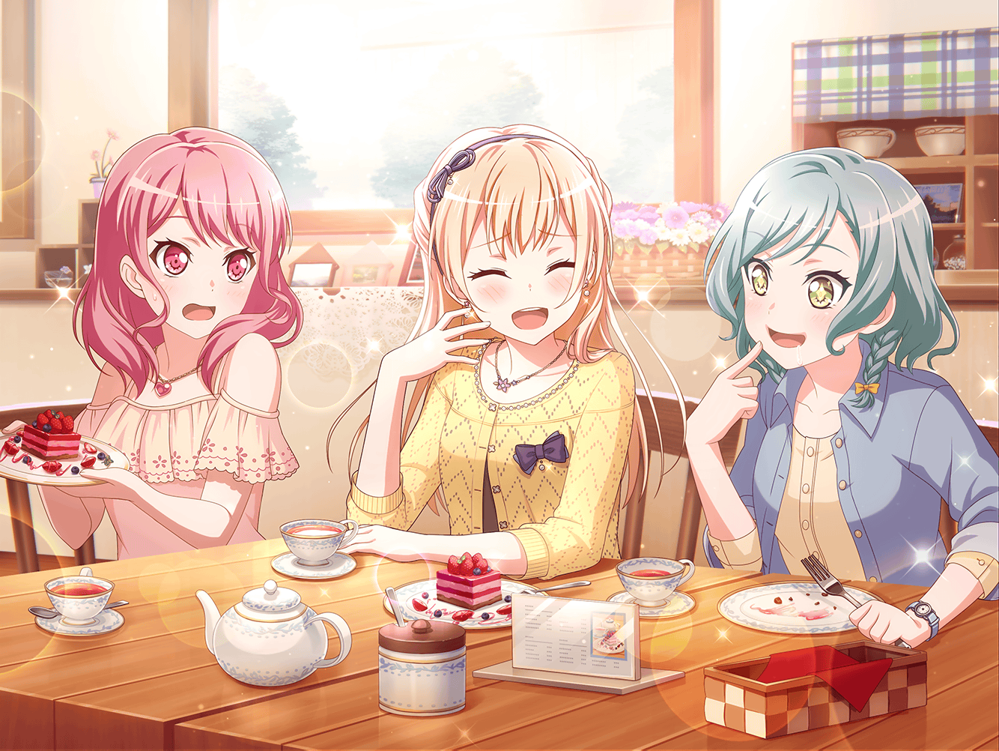

事務所
千聖
おはようございます
スタッフ
千聖さん、ちょうどいいところに。
これ、お渡ししておきますね
千聖
これは……？
スタッフ
千聖さんの舞台インタビューが載った雑誌ですよ。
今朝、事務所に届いたんです。
インタビューを受けたの、覚えていませんか？
千聖
ああ……思い出しました！
そういえば、稽古の途中で受けましたね
千聖
（私、何を言ったかしら……あまり思い出せないわね）
スタッフ
インタビューのページにふせんをつけてありますから、
見てみてください。１８ページです
千聖
ありがとうございます。
えっと、私の記事は……
日菜
なになに～？
何話したの～？
イヴ
気になります！
千聖
きゃっ！ ２人共いたのね……
声をかけてくれればいいのに。
急に後ろから声かけられたら驚くじゃない
日菜
だって、千聖ちゃんとスタッフさんの会話が
聞こえちゃったんだもーん
麻弥
インタビュー、何を話したんですか？
教えてください！
彩
私も聞きたい～！
千聖
それが……全然覚えてないのよ。
稽古で必死だったから……
イヴ
そうなんですね！
じゃあ、みんなで読みませんか？
麻弥
いいですね！ レッスンが始まるまでまだ時間がありますし
千聖
もう、みんなったら……
じゃあ、全員でインタビュー読む？
一同
読むー！
読みます！
日菜
ねーねー、５人そろったしさ、
インタビュー読むついでにお茶タイムにしちゃわない？
彩
いいね～！
私おやつ持ってくるよ
麻弥
じゃあジブンはお茶入れてきますね！
イヴ
私も手伝います！
千聖
じゃ、じゃあ、私も……
彩
千聖ちゃんはいいの。主役なんだから座ってて
千聖
主役……
彩
おやつよし、お茶よし……
うん、準備できた！
イヴ
早く読みたいですっ！
麻弥
フヘヘ……楽しみです！
千聖
そんなにたいしたことは言ってないと思うわよ？
麻弥
そんなことないですよ！
きっと千聖さんの熱意が伝わる記事になってるはずです！
彩
よーしっ、ページを開くよ～！
イヴ
あっ、チサトさんの写真が載ってますよ！
これは衣装の写真ですね
麻弥
よく撮れてますね！
日菜
あっ、ここにパスパレのことも書いてある～！
あたしたちのことを話してくれたんだ
彩
えっ、どこどこ？
日菜
ここだよ、記事のこの部分。
『稽古は大変でした。つらいことや、悩むことばかりで……
壁に当たってもがいていたように思います』
日菜
『でも、Pastel＊Palettesのメンバーや、
友人がいつも応援してくれて、支えてくれました。
みんなに感謝の気持ちでいっぱいです』だってー！
彩
千聖ちゃん、そんなこと思ってくれてたんだ……
麻弥
感動です……
イヴ
すごくチサトさんの気持ちが伝わってきますっ
千聖
ちょっと日菜ちゃん、恥ずかしいから
私の前で朗読するのはやめて！
日菜
いいじゃ～ん！ 良いこと言ってるんだからさー
千聖
もう……
日菜
なんかさ、今まで千聖ちゃんとこんなやり取りってなかったよねー
イヴ
確かに、そうですね！
チサトさんが恥ずかしがったりするの、初めて見ましたっ
麻弥
千聖さん、変わりましたよね。
前よりジブンたちに素を見せてくれているというか……
親しみやすくなりました
彩
うんうん、私は今の千聖ちゃん、好きだよ！
千聖
みんな……
千聖
（私も、５人で過ごす時間が以前より楽しくなった。
自分が変われば、感じ方も変わってくるんだわ）
千聖
私、今回のことで、みんながいてくれて
本当に良かった、って思ったの。
一人だったら、壁を乗り越えられてなかったかもしれないわ
彩
千聖ちゃん……
麻弥
そこまで言ってもらえるとは……
千聖
直接言うのはちょっと照れるけど……
改めて、みんな応援してくれてありがとう。
これからもよろしくね！
一同
こちらこそ！